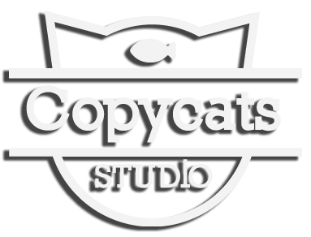

Resolvemos todo tipo de cuestiones sonoras. Ya sean publicidades, remixes, obras de teatro, pistas para cantantes o DJ’s, los Copycats confeccionamos una pieza musical a medida de las necesidades del cliente, buscando que el sonido complete la imagen y resalte las virtudes del producto.
Somos un grupo de músicos, productores, arregladores, DJ’s y técnicos. Valoramos el trabajo en equipo, el profesionalismo, los roles y talentos complementarios, y —por qué no— la idea de divertirnos trabajando.
Abordamos cada proyecto con amplitud de criterio y diversidad de propuestas. Creemos que cada desafío es una oportunidad para dar lo mejor de nosotros